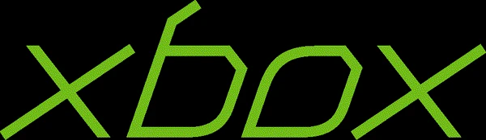
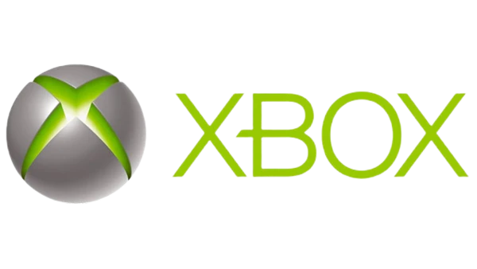
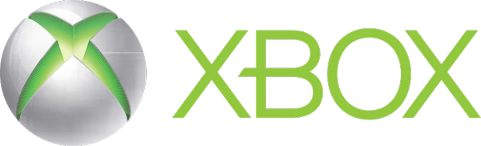
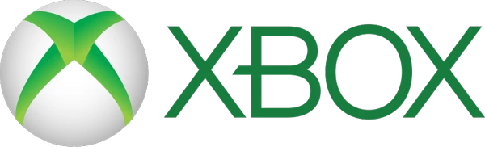
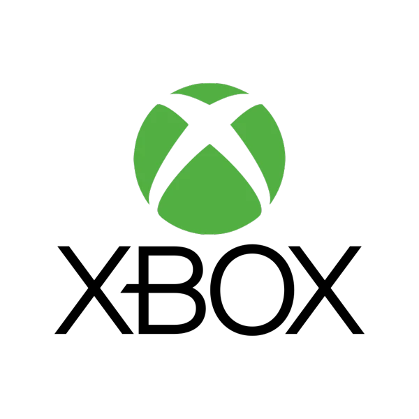

엑스박스 Xbox
엑스박스(Xbox)는 마이크로소프트 게이밍이 생산하는 미국의 비디오 게임 상표이다. 가정용 콘솔과 게임, 스트리밍 및 온라인 서비스를 포괄한다.
최종 업데이트

엑스박스는 어떤 브랜드인가
마이크로소프트 게이밍의 비디오 게임 상표로, 네 가지 주요 가정용 콘솔 라인과 애플리케이션, 온라인 서비스를 구성한다. 오리지널 콘솔을 시작으로 엑스박스 360, 엑스박스 원, 엑스박스 시리즈 X/S까지 네 세대에 걸쳐 발전했다.
엑스박스 클라우드 게이밍, 엑스박스 네트워크, 엑스박스 게임 패스 등 하드웨어 밖의 스트리밍과 구독 서비스도 운영한다. 2022년 마이크로소프트는 게임 사업을 확장하며 브랜드를 새로 형성한 마이크로소프트 게이밍 사업부의 일부로 재편했다.
최근에는 콘솔 판매보다 여러 장치에서 게임과 구독, 서비스를 이용하는 플레이어를 중시하는 방향을 강조한다.
엑스박스는 어떻게 시작되고 성장했나
마이크로소프트의 DirectX 팀 소속 엔지니어 4명은 플레이스테이션 2와 경쟁할 콘솔의 구상을 시작했다. 이들은 PC와 공통된 하드웨어 구성 요소를 활용하고 윈도우와 DirectX 버전을 실행해 개발자가 게임을 쉽게 만들 수 있는 시스템을 설계했다.
Direct X Box와 Windows Entertainment Project 등 여러 이름을 검토했으며, 소비자 조사에서 가장 높은 선호도를 얻은 Xbox를 선택했다. 2001년 11월 오리지널 콘솔을 미국에서 처음 출시하며 브랜드를 소개했다.
엑스박스의 브랜드 아이덴티티는 무엇인가
네 세대의 가정용 콘솔을 기반으로 게임, 구독, 온라인 네트워크와 클라우드 스트리밍을 하나의 비디오 게임 브랜드로 묶는 점이 특징이다.
엑스박스의 대표 제품과 서비스는 무엇인가
가정용 콘솔은 오리지널 엑스박스, 2005년 출시한 엑스박스 360, 2013년 11월 출시한 엑스박스 원, 2020년 11월 출시한 엑스박스 시리즈 X/S로 구성한다. 오리지널 콘솔은 PC와 공통된 하드웨어 구성 요소를 활용하고 DirectX를 참조한 설계를 채택했다.
엑스박스 라이브는 광대역 연결을 통한 온라인 게임과 친구 목록 등의 기능을 제공했다. 엑스박스 360은 멀티미디어 스트리밍과 키넥트 모션 제어 시스템을 지원했다.
현재 사업 범위는 게임 애플리케이션, 엑스박스 클라우드 게이밍, 엑스박스 네트워크와 엑스박스 게임 패스 같은 온라인 서비스까지 포함한다.
엑스박스는 지금 어떤 상태인가
2022년 마이크로소프트는 브랜드를 마이크로소프트 게이밍 산하로 재편했으며, 퍼스트 파티 퍼블리셔로 엑스박스 게임 스튜디오, 제니맥스 미디어, 액티비전 블리자드를 구성했다. 필 스펜서는 2014년 3월 말부터 책임자를 맡았다.
마이크로소프트는 2025년 6월 AMD와 협력해 콘솔과 컴퓨터를 포함한 다양한 장치 유형을 아우르는 차세대 하드웨어를 생산한다고 발표했다.
엑스박스 로고는 어떻게 변해왔나

1999–2005
2005–2010
2010–2013
2013–2019
2019–2026- 2026–현재
시기는 위키데이터 로고 기간 또는 위키미디어 커먼즈 파일 정보 기준입니다. 이미지를 누르면 원본 파일과 라이선스를 볼 수 있습니다.
자주 묻는 질문
엑스박스는 어느 나라 브랜드인가요?
엑스박스는 미국의 미디어·엔터테인먼트 브랜드입니다.
엑스박스는 언제 설립되었나요?
엑스박스는 2001년 설립되었습니다.
엑스박스의 브랜드 아이덴티티는 무엇인가요?
네 세대의 가정용 콘솔을 기반으로 게임, 구독, 온라인 네트워크와 클라우드 스트리밍을 하나의 비디오 게임 브랜드로 묶는 점이 특징이다.
엑스박스의 대표 제품은 무엇인가요?
가정용 콘솔은 오리지널 엑스박스, 2005년 출시한 엑스박스 360, 2013년 11월 출시한 엑스박스 원, 2020년 11월 출시한 엑스박스 시리즈 X/S로 구성한다.
엑스박스는 어느 기업이 소유하고 있나요?
2022년 마이크로소프트는 브랜드를 마이크로소프트 게이밍 산하로 재편했으며, 퍼스트 파티 퍼블리셔로 엑스박스 게임 스튜디오, 제니맥스 미디어, 액티비전 블리자드를 구성했다.
엑스박스의 공식 웹사이트는 어디인가요?
엑스박스의 공식 웹사이트는 https://www.xbox.com/ 입니다.
출처와 검증
엑스박스 관련 참고: 공식 웹사이트 · 위키데이터 Q15281614 · 한국어 위키백과 · 영어 위키백과. 브랜드명은 한글과 원어를 함께 표기하되 데이터에 없는 표기는 만들지 않습니다. 기원 국가·설립연도는 검수된 정의문에서 확인된 값을 우선하고, 없을 때만 공식 웹사이트 URL이 일치하는 위키데이터 개체의 값을 씁니다. 탄생일의 월·일은 위키데이터, 위키백과 정보상자, 본문 가운데 같은 연월로 확인되는 값만 싣고, 출처끼리 다르면 싣지 않습니다. 웹 첫 보관은 인터넷 아카이브가 공식 사이트 첫 화면을 처음 보관한 날로, 사이트 개설일과 다를 수 있습니다. 위키데이터 값은 2026-09-14 기준입니다.